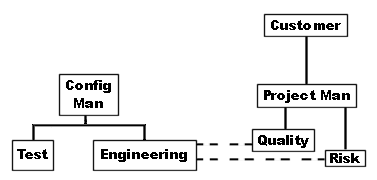
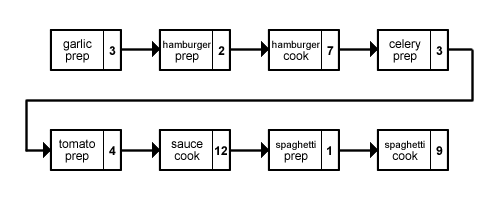
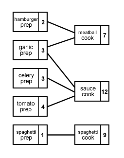
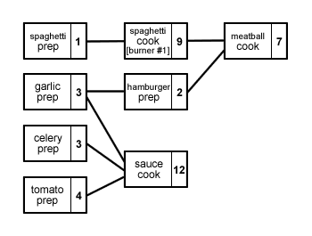

Home >> Project Management
Contents
What is Project Management?
|
} | Are used to optimize the use of time, money, talent, and resources to create systems of code, information, engineering documents, and user instructions. |
Planning
- Deliverables, capabilities (output)
- What must be done to create each output? (tasks)
- What is required for each task? (input)
- Attributes:
- deadline
- prerequisites
- whom is responsible
- start times
- % completed
- wait status
- Total task analysis inputs to determine if any inputs are deficient.
- Technical Feasibility: What are the top 5 (or 10) technical challenges? Have others met these challenges?
- Socio-political Feasibility: legal, environmental, corporate politics, labour organization, multi-jurisdictional, copyright/license/contract
Task Analysis
Feasibility
Control
- Articulation
- Use project methodology
- CPM
- PERT
- Project management software
- MS-Project
- Use project methodology
- Review
- Define review schedule
- Amend plans
- Accept input from all sources, including Risk Management and Quality Assurance
- Chains of Command
- Assign responsibility for all tasks
- Understand chain of command (formal & informal)
- Understand corporate culture pertaining to honesty and reporting
- Lines of Code (LOC)
- Function Point Analysis (FP)
- Software Estimation Models
- Configuration Management
- Engineering
- Quality Assurance
- Risk Management
- Testing
Checks and Balances
Project Organization
- eg.)

An Example: Preparing a Meal
The following table describes the tasks for the meal preparation (in this case, spaghetti and meatball sauce).
| Ingredient | Preparation Time | Cook Time |
|---|---|---|
| Celery | 3 min | 12 min |
| Garlic | 3 min | 12 min |
| Tomatoes | 4 min | 12 min |
| Spaghetti | 1 min | 9 min |
| Hamburger | 2 min | 7 min |
Single Thread
 Time: 41 min
Multi-Thread
 Place mouse cursor over diagram to view Critical Path Time for Critical Path: 16 min
Multi-Thread with Resource Constraints
Constraint #1: Hamburger prep will only begin when garlic prep is finished.
Constraint #2: There are only 2 burners.
 Place mouse cursor over diagram to view Critical Path Time for Critical Path: 17 min
Note:
- at min 1 and beyond the Critical Path could switch to Tomato Prep >> Sauce Cook.
- at min 5 and beyond the Critical Path could switch to Garlic Prep >> Hamburger Prep >> Meatball Cook.